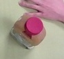
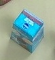
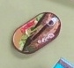
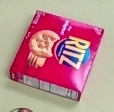
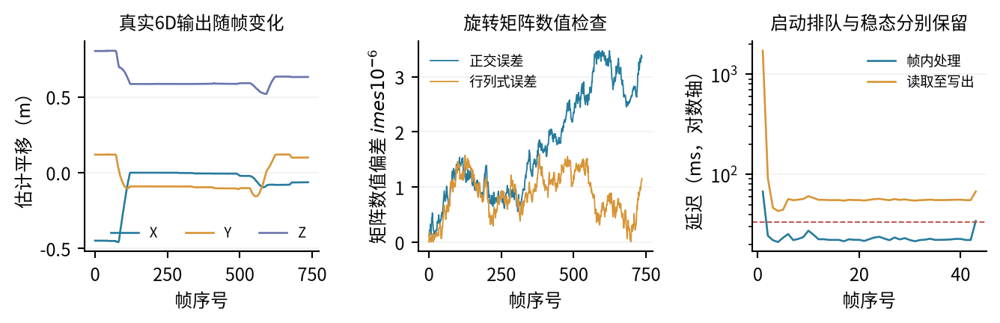
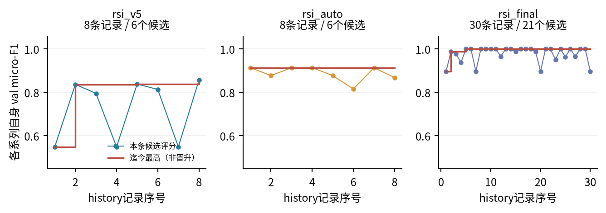

LSTM / Transformer test micro-F1；Mamba 为 0.9052。该记录与上方演示使用条件不同。
HUMAN–OBJECT INTERACTION · 2026.11
从看见手物，
到预测交互关系。
从“是什么物体”到“谁对谁做什么”：物体名称、真实骨架与 6D、带语义的交互箭头和模型概率，沿同一视频连续展示。
RGB-D 输入→手部 / 6D 感知→132D 历史特征→LSTM→有向交互图
三栏使用同一采集的相同帧号。左：带名称和框的 RGB，以及四个物体的实物缩略图；中：MediaPipe 与 FoundationPose 输出，以及“手 → 持握/移动/松手 → 红盖圆瓶”的视觉复核阶段；右：LSTM 的“主体 → 关系 → 客体”候选及原始概率。前 31 帧积累历史，之后 415 帧输出预测。
这是跨数据集流程演示，不是约 0.93 结果的测试视频。该片段没有交互真值，原始时戳尚未核验；回放与输入时基按 30 Hz 设置，不据此声称未来 1 秒准确率或实时性能。
模型、输入与可复核记录
LSTM / 132D / epoch 43；历史窗口 32 帧；展示阈值 0.50。物体位姿采用相机坐标；度量手部关节三维缺失并保留掩码。此演示没有训练或调参。跨源输入下，多条接触和共同运动关系出现接近1的概率；高置信度不等于正确，这些输出保留原值供检查，不能当作真值。
查看演示来源与 checkpoint SHA256 · 素材署名与许可物体有身份，连线有含义。
红盖圆瓶是这段视频的主要操作对象。蓝色纸盒、椭圆罐和粉色包装盒保留为独立背景实体，名称与边框颜色在整段视频中保持一致。




物体名称按外观人工标注，不冒充模型商品识别。当前交互是用于讲解的视觉复核阶段提示，抓取与松手过渡明确标记边界待核验；模型候选使用原始概率，未依据复核提示修改输出。
当前画面：手 → 持握 / 移动 → 红盖圆瓶
模型候选：左手 → 接触 → 红盖圆瓶，附实际模型概率
模型候选：左手 → 接触 → 红盖圆瓶，附实际模型概率
rsi_final 中含 21 个已评分候选。验证集选择与独立测试分开报告。
最终结果仍需绑定指定冠军的独立测试文件。报告保留各阶段证据和来源说明。
手部与 6D，也能单独看清。
两段实际感知回放，分别呈现单物体联合估计与四物体连续跟踪。
从真实日志回到指标。


技术报告与项目入口
中文单栏图文报告包含完整 pipeline、手部与 6D 原理、连续演示关键帧、指标验证及 RSI 实验分析。
ModelScope 在 2026-11-12 的检查中仅有模板文件，尚无数据文件。EgoDemo 原始交互演示与手部坐标视频保留在授权工作区，按上游许可不在本站再分发。